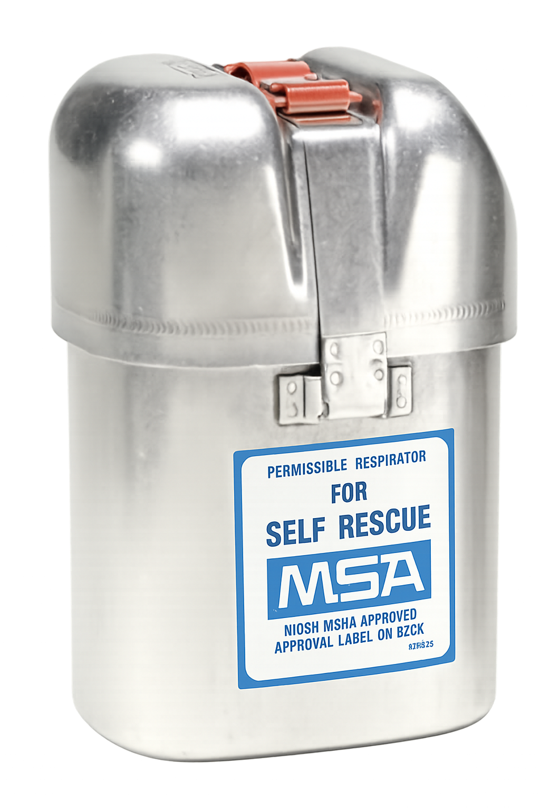

Emergency breathing device for toxic gas exposure
Хорт хийд өртөх үед хэрэглэх яаралтай амьсгалын төхөөрөмж

Self-rescuers are life-saving devices for underground miners, providing emergency breathing protection when exposed to toxic gases such as carbon monoxide.
They allow miners to escape safely during fires, explosions, or ventilation failures.
Далд уурхайн ажилчдын хувьд амь аврагч нь нүүрстөрөгчийн дутуу исэл зэрэг хорт хийд өртөх үед амьсгалах хамгаалалт үзүүлдэг амь насыг аврах хэрэгсэл юм.
Далд уурхайд гал, дэлбэрэлт, агааржуулалтын доголдол гарсан үед уурхайчдыг аюулгүй гаргах боломж бүрдүүлдэг.
Filters or chemically neutralizes CO for safe breathing.
CO-г шүүж эсвэл химийн аргаар саармагжуулж аюулгүй амьсгалах боломж бүрдүүлнэ.
Easy to carry on belt or chest.
Бүс, энгэрт зүүхэд хялбар.
Ready for immediate use in emergencies.
Яаралтай үед шууд хэрэглэнэ.
Meets international mining safety standards.
Олон улсын уурхайн аюулгүй ажиллагааны стандартыг хангасан.
1. What is the main purpose of a self-rescuer?
To provide emergency breathing protection
To protect feet
To reduce noise
2. Which gas is a self-rescuer designed to protect against?
Oxygen
Carbon monoxide
Nitrogen
3. Why is portability important for self-rescuers?
Allows miners to carry it at all times
Makes it waterproof
Improves brightness underground